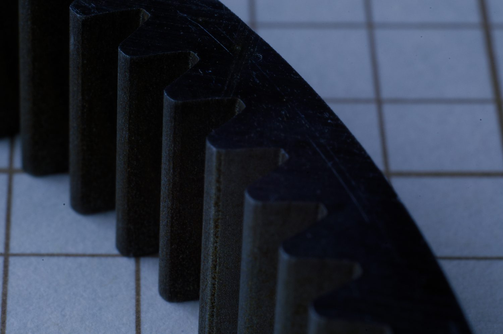

Timeline
Project Development
This project is inferred from the current ring gear media folder. The image sequence shows starting slug material, an EDM lead-in/cut feature, close-up tooth geometry, and finished isometric views of the ring gear. I treated the project as a Wire EDM process and inspection story: prepare the stock, plan the cut path, manage the lead-in and tooth form, then document the finished ring gear. Exact course context, drawing requirements, tolerances, material, and inspection results are still TBD.

-
Stock prep
Prepared Ring Gear Slug Stock
Started from slug stock that would become the ring gear profile.
- Slug media documents the starting workpiece before the gear form was cut.
- The wide slug image gives context for scale and stock condition.
- Exact material, stock dimensions, and drawing requirements are TBD.
-
EDM cut setup
Managed Lead-In and Cut Strategy
Used the lead-in feature to support the EDM cutting path into the ring gear geometry.
- Lead-in media suggests attention to where the cut starts and transitions into the part.
- This is the right place to add future notes about datum setup, wire path, and cut parameters.
- Machine, wire, and exact operation settings are TBD.
-
Inspection
Documented Tooth Profile Detail
Captured close-up media of the finished tooth form for visual review.
- Close-up image helps show edge quality and geometry detail.
- Future edits can add pitch, tooth count, tolerance, or inspection method.
- Quantitative gear inspection results are TBD.
-
Result
Finished Ring Gear
Documented the finished ring gear geometry with an isometric result image.
- Finished view provides the main project result image.
- TBD: add final acceptance criteria, tolerance results, and application context.
- TBD: note whether this was a course, research, or personal manufacturing project.